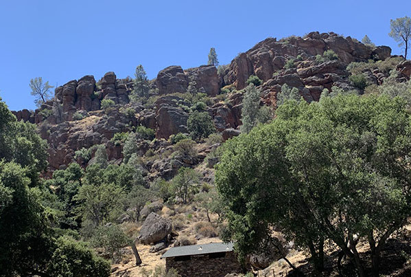

Pinnacles 2020 Pt.1
- With Climbing Crew
- June 10th-12th, 2020
- Climbing & Camping Trip
During COVID, Rishi and I were looking for way to safely go on trips and venture outdoors. Rishi got super excited about the idea of camping and reserved a number of campsites. One of these sites was Pinnacles Campground. We decided it would be the perfect opportunity to go on a climbing trip with the climbing crew that was already a part of our germ circle. We carried all our gear in 105-degree weather and had a send session!
Locations (CLICK on the pictures for a map!)
-
Pinnacles National Park
Pinnacles Campground, Tourist Trap, Discovery Wall
Day 1
We left around 4:30pm for Pinnacles National Park. At first, we were supposed to leave around 3:30pm but my work pushed that ETD back. Didn’t matter though since we decided to take one car and need to repack everything into mine. Eventually we were on our way! It was good road trip vibes all around. Cody and Lars were playing cards in the back. Rishi and I were collabing on road trip music up front.
We made a quick pit stop at a Walmart to get a cooler, food, and water. Rishi and Cody demanded we get Gatorade. I didn’t think it was necessary but boy am I thankful in retrospect since I would suffer from heat exhaustion the next day… On the final leg of the drive to Pinnacles, we passed by an intriguing looking town. It reminded me of an old western movie. We half joked that the town popped out of nowhere and would likely disappear when driving past this area on Sunday. LOL.
We finally arrived! We pasted by the entrance to the park and found out that cars were not allowed to enter the park. This was going to be an issue since tomorrow’s climbing would be a 3-mile approach in 100-degrees+ weather AND we would be carrying all our gear in a 50-pound bag. Ughhhhhhhhh. Oh well. We quickly found our campsite and set up for the night [Pictures #1 & #2]. Our campsite was huge! Literally an unnecessary amount of room. To pair with the unnecessary amount of room was Rishi’s 10-person tent… We had 4 people on this camping trip haha.
We were unbelievably hungry, so we started cooking right after setting up camp and cracked open some beers to enjoy the moment [Picture #3]. While Cody and Rishi started whipping out the cooking equipment [Pictures #4 & #5], Lars and I went to go check out the anthills (or maybe holes are a more appropriate term) near our campsite. Got some cool shots of them breaking down some Cheez-Its [Picture #6]. Hotdogs and hamburgers were on the menu which was surprisingly AMAZING! So, satisfying for a camping meal. As we started cooking it got dark pretty quickly. We devised a plan play cards and drink our nice beers in the tent. We quickly cleaned up our cooking area and put stuff into the food storage locker.
Okay so at first, we thought the campsite and tent were huge but then Rishi whips out this mega queen size bed! We joked that our camping setup was the Ritz of the camping world [Picture #7]. We all started to set up our own spaces in the tent and got ready to chill for the night. We cracked open the nice beers and played a few rounds a hearts [Pictures #8 & #9].
So funny story, I got up to relieve myself at some point during the night and walked near the massive tree near our campsite. All of a sudden, I hear some ruffling. To my right are a set of eyes. OMG it was a raccoon! I started to laugh and call the other guys over. In my mind, we locked up all our food, so the raccoon was eating someone else’s food. Turns out we actually didn’t lock up the food locker… If I were to recall correctly, the conversation went something like this…
Me: Guys come look! A raccoon is eating someone’s food.
Cody: That’s hilarious. Wait patty, THAT’S OUR FOOD!
Me: **Absolute silence**
Turns out the raccoon was eating the pastries that Lars had gotten specifically for this trip :(. Oh well. We carefully locked up the remainder of our food and got ready to continue booling around. Sometime in the night, Cody started taking extended exposure shots of the nighttime sky. This eventually turned into some sick photos of our group, tent, and nighttime sky [Pictures #10 & #11]. We eventually all hit the hay in preparation for the next day.
Day 2
The next morning, I was awoken around 5am by the sun and a multitude of chirping birds. I got up to use the restroom and fell back asleep when I got back. I probably got another hour in before getting up and joining Cody by the picnic tables. Cody was making coffee and breakfast. I went to go prep the climbing gear for the day. After we were done with this, we quickly drove out to get reception and contact Ungar to let him know what our plan was. Ungar said he was going to show up around 10ish. So, we decided we would have him meet us at Top Rope Rock.
Once we got back to the campground area, we realized that the road leading inside the national park was closed! Apparently, they did this to lower the amount of people using the facilities on the inside of the park. This presenting an interesting problem where we would need to hike around 3 miles into the park to get to the first climbing area. After waking up Rishi and Lars, we decided to wait for Ungar to get to the park so we could all do the approach hike together. We ate breakfast, drove back out of the park to find reception, let Ungar know our new plan, and drove back in. While we waited, we decided to play hearts for a bit.
Ungar showed up within 30mins. Lars shot the moon on our last round! Wow congrats to him since I have never done that in my life haha. We had a long conversation as to what we should do. We debated either going now and risking getting burnt out or going later in the day but wasting a big portion of Ungar’s free weekend. Another consideration was that we decided we would try and stay another night since the group campsite was just sooooo big. In the end, we decided to head into the park. Worst come to worst, we could just hangout in a shady area until it got cool enough to climb.
We gathered our gear, put on sunblock, and we were off [Pictures #12, #13, & #14]! The approach consisted of us taking the Bench Trail until we got to Bear Gulch which amounted to around a 3-mile hike. The concern was not the distance but the weather we would be hiking in since it was around 100-degrees+. Overall, the hike was beautiful and not very hard [Pictures #15, #16, #17, #18, & #19]. Even the weather didn’t seem to be a big issue since we were constantly hydrating. Couple of memories… Some lady told us to use the paved road since it was apparently faster. I thought it would be fine carrying the 50+ pound bag but in fact it was not.
We made a quick pit stop at a rock called Snakehead Rock [Picture #20]. It didn’t have any established routes on it but it didn’t stop us from trying to make our own boulder problem at the base of the rock. It was fun but the rock quality sucked and everything was flaking off. After a short break, we continued on to the main part of Pinnacles. We eventually reached Bear Gulch. OMG there were water stations and plenty of shade. We totally made the right move by going earlier in the day.
Eventually, we made it to Tourist Trap Rock. There was plenty of shade and extremely accessible top rope bolts. We all put our stuff down and took a bit of a rest break. We drank water, ate some food, and hungout for a bit. Lars wanted to go explore other rocks in the area. Rishi and Ungar wanted to stay with the stuff so Lars, Cody, and I went to go adventure further into the park. We took many different trails, saw some amazing cave structures, stem climbed our way through a mountain pass, found a spot that acted as a natural AC unit, saw a frog, and explored Discovery Wall. Discovery Wall was honestly breathtaking, It was really the firs 90+ foot wall I had encountered with the object of climbing it.
My big mistake was not brining water on our mini excursion. As we were hiking back, I started to feel lightheaded and thirsty. By the time we got back to Tourist Trap Rock, I was suffering from heat exhaustion. It didn’t help that I was wearing my climbing pants and a flannel. I drank as much water as I could but apparently the effects of heat exhaustion and dehydration would linger for a while. I didn’t let it hold me back and went to setup the top rope anchor, teach Cody how to repel, and get our crew climbing [Pictures #21, #22, #23, & #24]! Ungar, Lars, and Rishi all their moments with the height factor. Cody was managing it pretty well. Rishi got a few neat photos of me at this rock [Pictures #25 & #26].
Once we had our fun at Tourist Rock, we started the short 10-20 min hike to Discovery Wall [Picture #27]. OMG it was funny watching Ungar and Rishi’s reactions to the wall. TBH, it is an absolutely monster of a wall [Picture #28]. Cody and I spent a few minutes looking at all the routes to see if any were safe to lead. TBH, none of them looked safe. I opted to try and get to the top of the rock by the approach that the mountain project was referring to. Ungar decided to accompany me. The others started making up boulder problems at the base of the wall [Picture #29].
After looking at the map, Ungar and I walked around the right side of the wall. We found the hiking path that would lead us to the top. I decided we might be able to cut through the middle of the large loop to put up the anchor quicker. Turns out the shortcut I had found was full of Poison Oak. Oh well lol. It took a bit of scrambling up a chimney. I had Ungar throw of the rope to me. I then walked to the top of Discovery wall. OMG it was beautiful [Picture #30]. Okay now the part that sucked was that the rope that I brough to the top of Discovery wall wasn’t long enough! :( Apparently, the rope ends were still around 20ft off the ground. Bummer. When we go again in mid-August, I need to bring an extended sling setup. There were many amazing bolts, but the wall was just very tall.
Eventually, I came down with all the gear and we bouldered a bit before heading back to the campground [Picture #31]. Honestly, I was starting to feel like shit at this point no matter how much water I drank. I really made a mistake with the clothing choice and not drinking enough water earlier in the day. Lesson learned… Thankfully, everyone was very nice and helped me carry a big portion of my load back to the campsite. Also, we decided we would leave all the climbing gear hidden near tourist trap. Saved us having to carry 50-pounds+ of gear back.
Since we started heading back so late, it was dark by the time we got to Bear Gulch. We saw bats! Not clearly, but we could definitely point them out. We used the road to get back to the campground as it was an easy to follow path that we could walk quickly on. As we approached the campsite, we noticed that the other group that had arrived were younger folks, so we knew we were go to stay another night. For a moment, Rishi and I considered going home that night since I wasn’t feeling too hot but instead decided to stick it out.
Ungar left since he had things to do on Sunday. We set up camp at the campsite next to our original campsite. Lucky the party that had reserved this site left a day early. We cooked a quick dinner and discussed plans for the next day. We decided it would make no sense to climb in the park again since I wasn’t feeling too hot and we would have to leave around noon anyways. However, we left our climbing gear near Bear Gulch…
Since we had seen other regular cars pass through the gates blocking the road, we decided to quickly drive into the park, garb the climbing gear, and quickly drive back out. Cody, Rishi, and I decided to go grab the gear together. Honestly, it was kinda spooky driving on the road. We got the climbing gear without any complications or running into any other cars. Interesting memory, I almost hit a deer and Cody sorta had to call it out… Once I got back, I rinsed myself off at one of the water stations, changed, and immediately went to sleep.
Day 3 & Concluding Thoughts
I got up early the next morning to pack up all our gear [Picture #32]. I wanted to be ready to leave as soon as everyone got up. Good thing was that my head was feeling better! I still wasn’t 100% but very close. Eventually, everyone else got up, we finished packing everything up, and headed for Castle Rock to boulder for the day. On the way to Castle Rock we stopped at McDonalds for some sausage egg muffins and hash browns. We also made sure to check if the weird “western” town was still there. It was in fact still there.
Eventually, we got to Castle Rock. The parking situation was horrible. There were so many people. Ughhhhh. We luckily found a family that was leaving and got their spot. We got out of the car and walked to the Magoos bouldering area. Turns out the trails were marked as one way. We found a way around to get to the boulders. We climbed the Magoos and tried a ton of the random boulders in the area. We even made our way to the top rope area and bouldered near the base of the rock [Pictures #33 & #34]. Yes, there is a trend with our group and creating random boulder problems at the base of random rocks haha. We headed out and, on the way, back home, made a quick stop at In-N-Out. That had to be the icing on the cake.
Overall, this trip was amazing expect for the fact that I overheated and had to cut the second part of our Pinnacles climbing day short. Looks like we have found a pretty good climbing crew to go on adventures with. Everyone seems interested in rope climbing and growing that form of climbing. Can’t wait to see what adventures we go on next!
Sounds like a good time but will have to report you for trespassing a national park 🤭🤨 Jk! Had a blast with you and the climbing crew and was stoked that was my first top roping experience!! Hopefully you learned your lesson about heat exhaustion lol